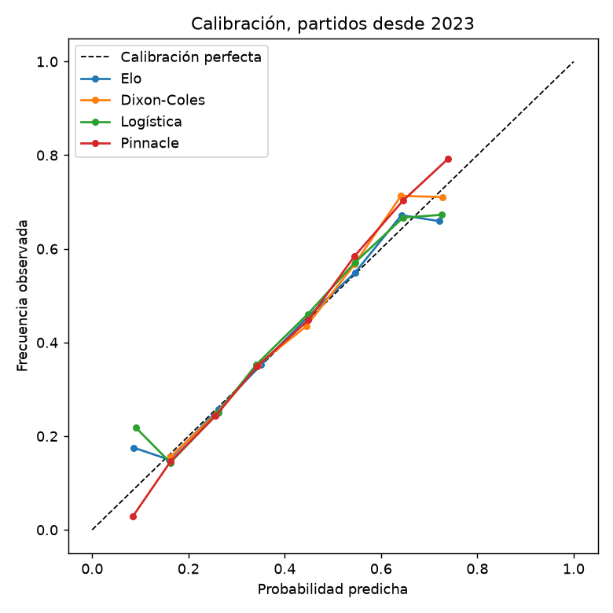
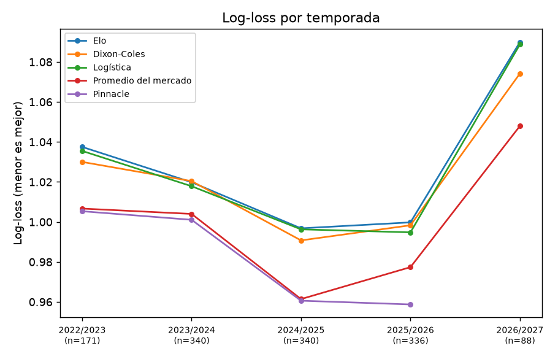

Qué tan bien funciona
Los modelos se ajustaron solo con partidos anteriores a 2023 y se evalúan con los 1275 partidos jugados desde entonces. Mostramos todos los resultados, también cuando el modelo pierde. En log-loss y Brier, menor es mejor; una diferencia positiva significa que el modelo es peor que el mercado.
Contra Pinnacle (982 partidos con cuota de cierre)
| Modelo | Log-loss | Brier | Diferencia | IC 95% | Lectura |
|---|---|---|---|---|---|
| Elo | 1.0055 | 0.6009 | +0.0235 | +0.0110 a +0.0357 | peor que el mercado |
| Dixon-Coles | 1.0027 | 0.5991 | +0.0208 | +0.0093 a +0.0321 | peor que el mercado |
| Logística | 1.0039 | 0.6000 | +0.0220 | +0.0100 a +0.0337 | peor que el mercado |
| Pinnacle | 0.9820 | 0.5846 | — | — | referencia |
Contra el promedio del mercado (los 1275 partidos)
La fuente dejó de publicar cuotas de Pinnacle en la segunda mitad de 2025/26, así que esta tabla cubre también los partidos más recientes.
| Modelo | Log-loss | Brier | Diferencia | IC 95% | Lectura |
|---|---|---|---|---|---|
| Elo | 1.0156 | 0.6070 | +0.0266 | +0.0162 a +0.0371 | peor que el mercado |
| Dixon-Coles | 1.0117 | 0.6048 | +0.0227 | +0.0133 a +0.0321 | peor que el mercado |
| Logística | 1.0133 | 0.6058 | +0.0243 | +0.0143 a +0.0344 | peor que el mercado |
| Promedio del mercado | 0.9890 | 0.5893 | — | — | referencia |
Calibración
Si el modelo dice 40%, ¿ocurre cerca del 40% de las veces? Cuanto más pegada a la diagonal, mejor.

Tabla del modelo Dixon-Coles (error de calibración esperado: 0.013).
| Probabilidad predicha | Casos | Promedio predicho | Frecuencia observada |
|---|---|---|---|
| 0.0-0.1 | 19 | 9% | 16% |
| 0.1-0.2 | 364 | 16% | 16% |
| 0.2-0.3 | 1708 | 26% | 25% |
| 0.3-0.4 | 703 | 34% | 35% |
| 0.4-0.5 | 501 | 45% | 44% |
| 0.5-0.6 | 349 | 55% | 57% |
| 0.6-0.7 | 143 | 64% | 71% |
| 0.7-0.8 | 38 | 73% | 71% |
Log-loss por temporada

2022/2023 solo incluye el Clausura 2023. El punto de Pinnacle en 2025/2026 cubre únicamente los partidos con cuota de Pinnacle, por lo que no es directamente comparable con las demás líneas de esa temporada.
Limitaciones
- Solo usa resultados y marcadores; no sabe de lesiones, alineaciones ni xG.
- Se compara contra cuotas de cierre, que ya incorporan toda la información disponible antes del partido.
- La liguilla se trata como cualquier otro partido.
Datos: football-data.co.uk, 4743 partidos de 2012-07-21 a 2026-09-28. Versión del modelo 0.1.0.